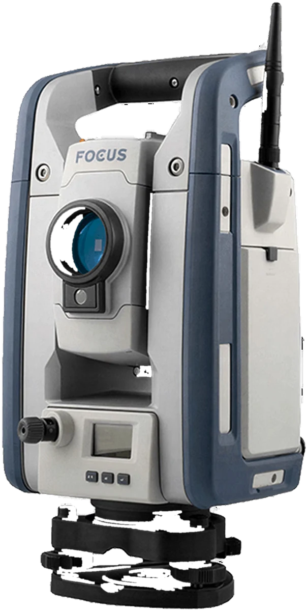
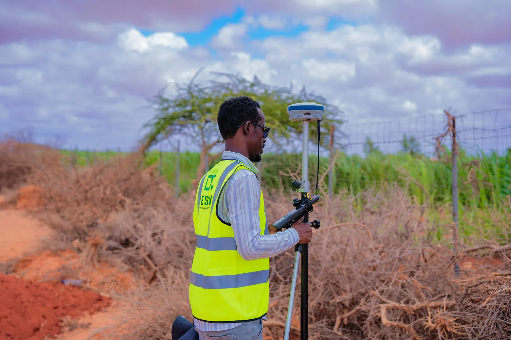
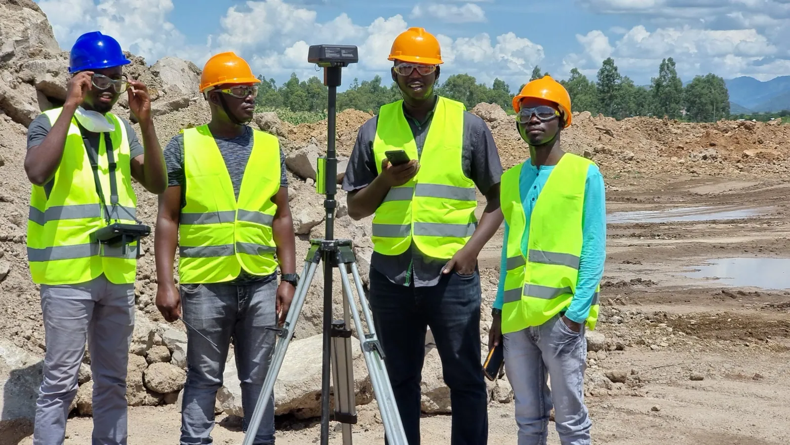
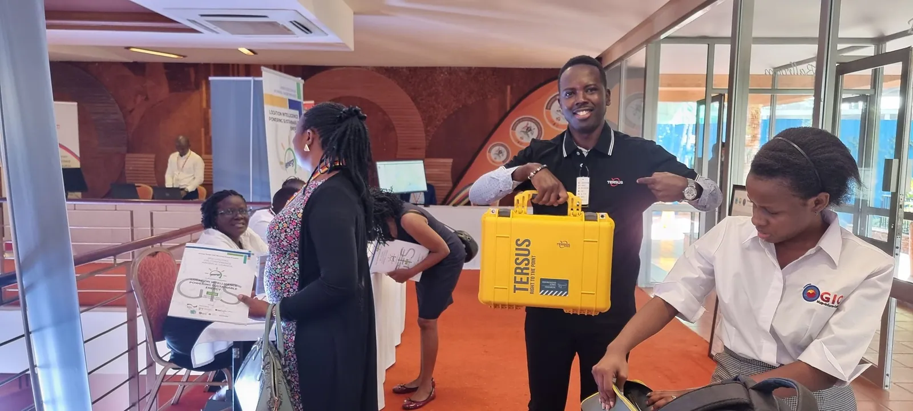

GNSS
SP100 GNSS receiver: everything you need for surveying
A complete surveying GNSS solution with everything in the box, entry-level simplicity and dependable everyday performance.
Learn more TrimbleGNSS · Total Stations · Scanning
TrimbleGNSS · Total Stations · Scanning DJI EnterpriseDrones · LiDAR · Dock
DJI EnterpriseDrones · LiDAR · Dock Esri ArcGISGIS & SDISpectra GeospatialGNSS & Robotic Stations
Esri ArcGISGIS & SDISpectra GeospatialGNSS & Robotic Stations Nikon PrecisionOptical Survey
Nikon PrecisionOptical Survey US RadarGround Penetrating Radar
US RadarGround Penetrating Radar Seafloor SystemsHydrographic Survey
Seafloor SystemsHydrographic Survey IBM Tape StorageEnterprise Data Archive
IBM Tape StorageEnterprise Data Archive XGRIDSHandheld SLAM LiDAR
XGRIDSHandheld SLAM LiDAR



A complete surveying GNSS solution with everything in the box, entry-level simplicity and dependable everyday performance.
Learn moreOfficial films from Spectra Geospatial.
Spectra Geospatial serves the survey, GIS and construction markets.

Everyday GNSS and robotic positioning for fast, dependable field data.
Learn more
Stake out, check and verify work with total stations and controllers.
Learn more
Capture accurate positions for asset inventories and field GIS.
Learn moreGNSS, optical and software, supplied and supported by KACO Systems.
Receivers for everyday surveying
Complete surveying GNSS solution
Powerful and ultra-rugged GNSS
Robotic and mechanical total stations
Customizable robotic total station
Mechanical total stations for every job
Field software and rugged data collectors
Handles a full range of projects
Rugged, cost-effective data collection
Compact rugged controller
Locate Spectra Geospatial dealers and distributors worldwide.
Learn moreManuals, firmware and technical help for Spectra Geospatial products.
Learn more
Hands-on, instructor-led courses for field crews and office teams, delivered in Kampala.
Learn more
Our Kampala lab services, calibrates and supports your instruments so they stay survey-ready.
Learn moreSpectra Geospatial hardware is built for everyday productivity — we keep it calibrated, supported, and your crew trained to get the most from it.
Scalable GNSS and robotic total station hardware suited to daily topographic survey, construction stakeout, and GIS data collection work.
Our Kampala facility services and calibrates Spectra GNSS receivers and total stations to keep them within factory accuracy specifications.
Hands-on training in Survey Pro, Origin, and Ranger controller workflows so your crew can move confidently from field capture to office deliverables.
Our application engineers help you configure the right Spectra Geospatial GNSS, total station, and software combination for your team.